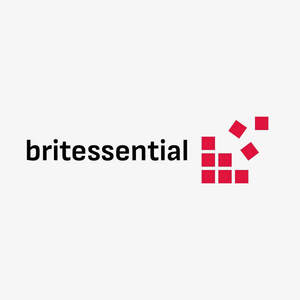

Trade Mark Journal No.2025/030 25 July 2025
UK00004233376 14 July 2025 (21)

- Class 21
- Kitchen utensils; Spatulas [kitchen utensils]; Household or kitchen utensils; Tenderizers [kitchen utensils]; Moulds [kitchen utensils]; Molds [kitchen utensils]; Kitchen utensils of silicon; Mixing spoons [kitchen utensils]; Cooking utensils; Turners (kitchen utensil); Egg separators [kitchen utensils]; Griddles [cooking utensils]; Aluminium moulds [kitchen utensils]; Kitchen graters; Presses (Garlic -) [kitchen utensils]; Garlic presses [kitchen utensils]; Dishes [household utensils]; Grills [cooking utensils]; Baking utensils; Tortilla presses, non-electric [kitchen utensils]; Cooking utensils, non-electric; Kitchen containers; Household utensils; Spatulas for kitchen use; Basting spoons [cooking utensils]; Griddles [non-electric cooking utensils]; Non-electric griddles [cooking utensils]; Kitchen jars; Cooking utensils for barbecue use; Trivets [table utensils]; Toilet and bathroom cleaning utensils; Kitchen sieves; Graters [household utensils]; Kitchen sponges; Kitchen utensils, not of precious metal; Serving scoops [household or kitchen utensil]; Graters for kitchen use; Household or kitchen containers; Wire baskets [cooking utensils]; Sieves [household utensils]; Cooking utensils for use with domestic barbecues; Pestles for kitchen use; Sifters [household utensils]; Ceramics for kitchen use; Kitchen mitts; Grills in the nature of cooking utensils; Cosmetic and toilet utensils; Kitchen moulds; Basting spoons, for kitchen use; Spoons (Basting -), for kitchen use; Laundry balls for use as household utensils; Containers for household or kitchen use; Graters [non-electric household utensils]; Cookware and tableware, except forks, knives and spoons; Scrapers (kitchen implements); Cosmetic utensils; Simmer rings [cooking utensils]; Defrosting trays for kitchen use; Tableware, cookware and containers; Utensils for household purposes; Skewers (cooking utensil); Kitchen grinders, non-electric; Kitchen mixers, non-electric; Cinder sifters [household utensils]; Turners for kitchen use; Utensil jars; Cooking pots for use in microwave ovens; Cooking pots and pans [non-electric]; Non-electric cooking pots and pans; Hand-operated grinders; Grinders (Non-electric -); Coffee grinders; Pepper grinders; Coffee grinders, hand-operated; Hand-operated coffee grinders; Pepper grinders, hand-operated; Spice grinders (Non-electric -); Hand-operated pepper grinders; Meat grinders, non-electric; Non-electric meat grinders; Hand-operated salt grinders; Non-electrical coffee grinders; Hand-operated food grinders; Kitchen grinders, non-electric; Domestic grinders, non-electric; Crushers for kitchen use, non-electric; Canister sets; Tea canisters; Vacuum flask cookers; Vacuum bottles; Glass cartridges for medication, empty; Vacuum jars; Insulated vacuum bottles; Vacuum bottles [insulated flasks]; Vacuum coffee bean containers; Vacuum flasks for holding food; Vacuum jugs (Non-electric -); Vacuum mugs; Empty spray bottles; Vacuum flasks; Brushes for cleaning tanks and containers; Reusable stainless steel water bottles sold empty; Plastic spray nozzles; Reusable plastic water bottles sold empty; Aluminium water bottles, empty; Plastic water bottles [empty]; Reusable stainless steel water bottles; Vacuum flasks for holding drinks; Bottle coolers [receptacles]; Food preserving jars of glass; Preserve glasses; Jam jars; Storage jars; Glass jars; Glass storage jars; Glass bottles; Glass containers; Glass vases; Jars; Food preserving jars of glass; Glass flasks [containers]; Glass pots; Glass flasks; Travel mugs; Pet feeding bowls; Pet grooming glove; Pet paw cleaners, non-electric; Pet lick mats; Electric pet brushes; Electronic pet feeders; Food containers for pet animals; Dispensers for liquid soap; Kitchen paper dispensers; Dispensers for paper towels; Ironing boards; Ironing board covers; Knife boards; Pastry boards; Chopping boards for kitchen use; Carving boards; Carving boards for kitchen use; Stainless steel cutting boards; Laundry baskets; Laundry drying racks; Toilet and bathroom cleaning utensils; Lint rollers; Adhesive rollers for cleaning; Plastic bins [dustbins]; Pedal bins [dustbins]; Dish drying racks; Dish cloths; Oven to table racks; Cutlery trays; Toilet brush sets; Rings for towels [bathroom fittings]; Bathroom pails; Bathroom glass holder; Bathroom ladles; Bathroom basins [receptacles]; Lavatory brushes; Cages for pets; Litter scoops for use with pet animals; .
K-SKIN SECRET LTD